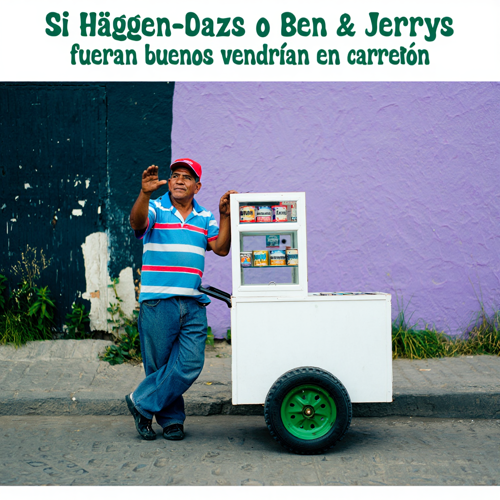
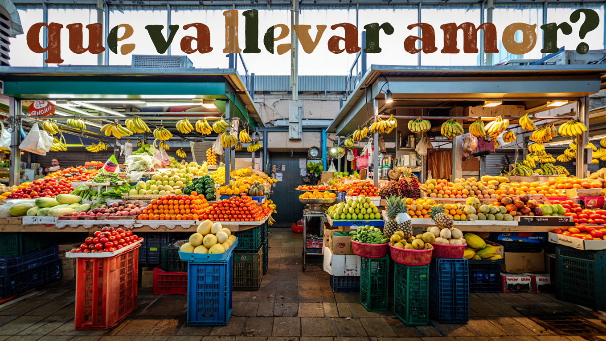

¿Por qué hablo de Inteligencia Artificial en español?
En 2025 creo que no hay persona que no haya escuchado acerca de la Inteligencia Artificial. Pero al preguntar qué es exactamente, para qué sirve o cómo funciona, la mayoría no sabe responder – especialmente en LATAM. En mi opinión, esto se debe principalmente a que no hay información sobre el tema en español y más específicamente se debe a tres factores : la cultura poco “tech”, la poca exposición a la IA y la falta de contenido técnico sobre el tema. Creé este blog con la intención de contribuir a que esto cambie.
A medida que esta tecnología se va desarrollando se vuelve cada vez más relevante entenderla. Entenderla, por una parte, nos ayuda distinguir los riesgos infundados (como el rumor de que se está convirtiendo una entidad fuera de control) de los riesgos reales (como el hecho que puede amplificar ciertos sesgos que ya tenemos). Por otra parte, comprenderla nos permite identificar oportunidades de impacto positivo : desde cómo potenciar el crecimiento de negocios locales hasta implementar educación personalizada a gran escala. Finalmente, entenderla nos da la oportunidad de participar en la discusión. En lugar de delegar la decisión a un número limitado de personas acerca de cómo queremos que esta tecnología sea implementada, nos permite que sea una decisión colectiva.
Los desafíos en LATAM
Una cultura poco “tech”
Me encanta LATAM. Los memes de “no entenderían la vibra” o “imagínate vivir en Suiza y perderte esto” creo que ilustran perfectamente algunas de las cosas que hacen única nuestra región. Siempre me ha parecido curioso cómo el hablar español nos hace tener tantas cosas en común. Lastimosamente, a pesar de nuestra bella lengua, memes, comida, stickers y tradiciones, nos falta mucho a nivel de cultura tecnológica. A diferencia de otras regiones, los medios de comunicación no le dan el mismo peso a los avances tecnológicos – especialmente en IA. TechCrunch, The Verge, MKBHD, entre otros, son medios de comunicación estadounidenses que cubren exclusivamente temas de tecnología. En LATAM no tenemos un equivalente en mi opinión. Esto crea un círculo vicioso en el que nadie está informado, por lo tanto nadie le da importancia, entonces las pocas noticias que vemos en los medios no parecen ser importantes, entonces no se venden y por eso los medios deciden darle aún menos cobertura. Obvio, es fácil argumentar que tenemos problemas más serios que estar al día con el nuevo modelo de computadora que Apple presentó, pero muchas de estas noticias si son importantes para nosotros. Especialmente ahora que salen nuevos modelos de IA cada semana, estar al día con esta información nos permite identificar nuevos casos de uso ya que a medida que estos modelos van mejorando, nuevas posibilidades se van perfilando. Entre otros, a nivel individual esto nos permite identificar que partes de nuestras labores diarias se van automatizando (y que por lo tanto van siendo menos relevantes en el ámbito laboral) y a nivel de organizaciones esto permite identificar casos de uso que antes eran imposibles. No me parece exagerado decir que los avances se están dando en una escala de no meses, sino semanas. Por ejemplo, la posibilidad de editar o generar imágenes con texto ha mejorado significativamente recientemente. En tan solo un mes Google, Rêve, y OpenAI anunciaron modelos de este tipo. Cada uno – a mi parecer – superando el modelo anterior. Aquí están algunos ejemplos de imágenes generadas con IA a partir de una descripción textual que yo le dí al modelo.
 
Al no estar atentos a los avances en IA, se nos hace difícil ver las posibilidades que se van creando.
Mucho ring ring y muy poco helado
Los sistemas de recomendación son el tipo de IA con el cual estamos más familiarizados en LATAM. Cada vez más Youtube, Netflix y especialmente Instagram y Tiktok proponen el contenido exacto que buscamos antes de que lo busquemos, hasta el punto que a veces creemos que estas empresas escuchan nuestras conversaciones. (La cantidad de veces que he visto anuncios de un producto después de haber hablado de él es perturbante). Otro ejemplo que creo que mucha gente se ha cruzado son los asistentes de servicio al cliente – aunque la mayoría de veces dejan mucho que desear. Pero allí nos quedamos… estos son los casos típicos de los cuales hemos escuchado en LATAM. Para nosotros eso es todo lo que la IA puede hacer, porque es lo único que conocemos. A esto me refiero con “mucho ring ring y muy poco helado” (que sale de un sticker de WhatsApp). Muchos dicen que la IA promete cambiar todo… pero ¿cómo? ¿Se supone que un bot de servicio al cliente va a cambiar industrias enteras?
Hemos tenido muy poca exposición a otras aplicaciones menos conocidas de la IA, y algunas veces porque ni sabemos que por detrás hay IA (como los asistentes como Siri o autocorrectores en nuestros teléfonos). La exposición hace que uno se familiarice con la tecnología, y probándola es como uno ve el alcance que tiene. Mi ejemplo favorito de esto es la primera vez que le mostré ChatGPT a mis papás. Mi papá me dijo que le preguntara “¿Cuál es el río más caudaloso del mundo?”. Me sentí un poco decepcionado porque era una pregunta que Google puede responder, pero es simplemente que ellos no veían en ese momento que ChatGPT podía responder a preguntas que eran impensables hace un par años. Justo después le pedí a ChatGPT que me hiciera un ensayo acerca de la libertad – algo que Google no lograría, y algo que uno no se esperaría que una computadora pueda responder. Pero lo hizo. Probar e interactuar con la tecnología juega un rol crucial para entender de qué es capaz, y poder realmente sacarle provecho. No menos importante, esta misma interacción nos permite también identificar sus debilidades. Cada vez más escucho personas decir “ChatGPT me dijo [una cifra/hecho]”. Pero ChatGPT (y similares) no siempre proveen información factual, y hay muchísimos equipos trabajando en ese problema hoy en día porque aún no está resuelto. (De hecho este es un verdadero riesgo : cómo gestionar toda la desinformación o “fake news” que se pueden generar con estos modelos). Estar al tanto de esta debilidad crítica evita que creamos a ciegas en todo lo que el modelo dice.
Las pocas interacciones que tenemos con la IA en LATAM nos pintan una imagen extremadamente limitada de lo que la IA es, de su verdadero alcance y de los riesgos más tangibles.
Educación técnica
Si tomamos en cuenta que tenemos sistemas de educación muy deficientes, el hecho que no tenemos un nivel de inglés muy alto, y que 99.99% de los recursos de calidad están escritos en inglés, esto pone una barrera gigantesca para cualquiera que quiera aprender cómo funciona la IA, y es el caso en muchas otras disciplinas también. En mi caso, cuando estaba en el colegio, compré unos libros que – sin exageración alguna – cambiaron mi trayectoria académica. Pero esos libros no estaban en español, tampoco la mayoría de videos que vi en Youtube. Más tarde, cuando aprendí a programar, los recursos que vi tampoco estaban en español.
Varios años después, la situación no es muy diferente. Casi todos los blogs de empresas que publican implementaciones de IA son de empresas estadounidenses y están escritos en inglés. Todos los artículos publicados acerca de avances técnicos se publican en inglés. Programas como DeepLearning.ai se desarrollaron en inglés. Aunque, justamente con la IA, estos cursos a veces proponen versiones traducidas al español, no es igual.
¿Qué esperar de este blog?
El año pasado fui parte del programa de mentorías LatinX in AI que busca promover el talento latinamericano en el sector de la IA. En una reunión que tuvimos nos preguntaron que significaba para cada uno ser latino trabajando en IA. Para mi, significa compartir lo que sabemos porque los recursos acerca del tema en español son extremadamente escasos.
Mi objetivo, como lo dije al inicio, es que más personas puedan responder a las preguntas ¿Qué es la IA?, ¿Cómo funciona?, ¿Para qué sirve?.
Para esto, compartiré :
- Casos de uso reales que van más allá de las aplicaciones “típicas” que ya conocemos para insistir en el alcance de esta tecnología y ampliar la exposición que tenemos a la IA.
- Explicaciones desde cero, para que haya más recursos sobre esta tecnología y que cualquiera pueda aprender cómo funciona, sin importar el nivel previo.
- Una newsletter con las novedades más importantes, para estar al día fácilmente sin abrumarse con el ruido.
Los próximos blogs serán :
- ¿Qué es la Inteligencia Artificial? – para que todos puedan responder la pregunta “¿qué es?”
- ¿Por qué los LLMs son tan importantes? – para mostrar como modelos como ChatGPT van mucho más allá de solo responder preguntas.
- ¿Cómo funciona ChatGPT? – vamos a construir y explicar desde cero cómo funciona una versión de ChatGPT.
Sixto :)